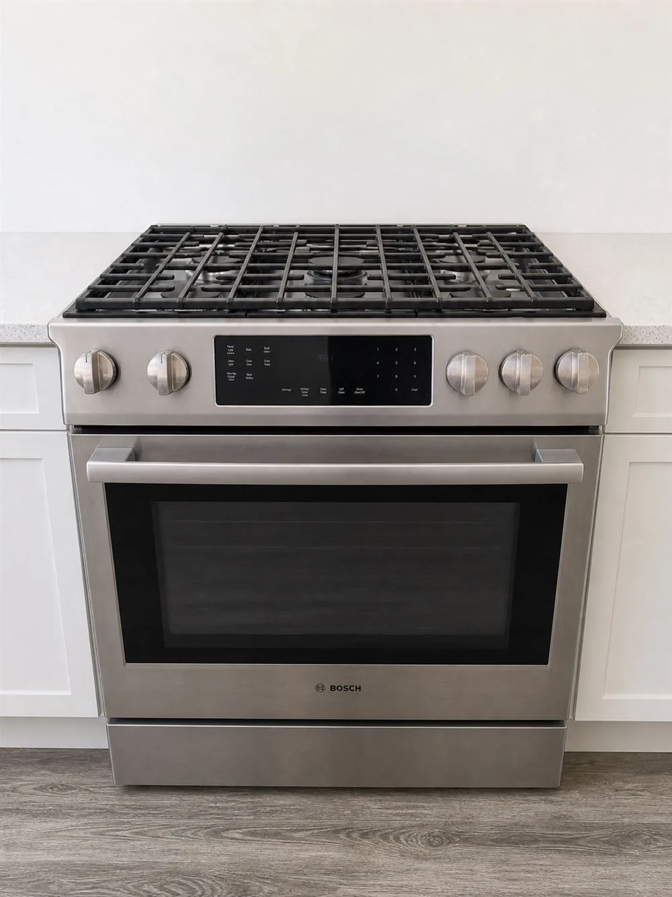

Greater Tucson appliance service
Range & Oven Repair
Practical diagnosis for ranges, ovens and cooktops that will not heat, regulate temperature or operate correctly.

Cooking appliance help
Confirm the heating and control problem.
Cooking appliances combine high-current or gas heating components with sensors and controls. House & Hand evaluates the reported symptom, checks the functions connected to it and explains the repair options based on the model and condition.
Problems we can evaluate
Common concerns include an oven that does not heat, inaccurate temperature, a burner or element that will not operate, control errors, a door problem or unusual behavior during cooking. Gas odors or suspected gas leaks require immediate safety action rather than routine appliance use.
Safety first
If you smell gas, leave the area and contact the gas utility or emergency services from a safe location. Do not operate electrical switches or continue troubleshooting the appliance.
Spooky savings
$85 diagnostic
Schedule by November 1, 2026.
Regular diagnostic rate $110. Offer applies to diagnostic appointments scheduled through November 1, 2026. Cannot be combined with another offer.Related service
Appliance repair where you live.
Need range or oven help?
Tell us what is not heating.
Call with your address, model number and a brief description. We will confirm whether the appliance and location are within our current schedule.